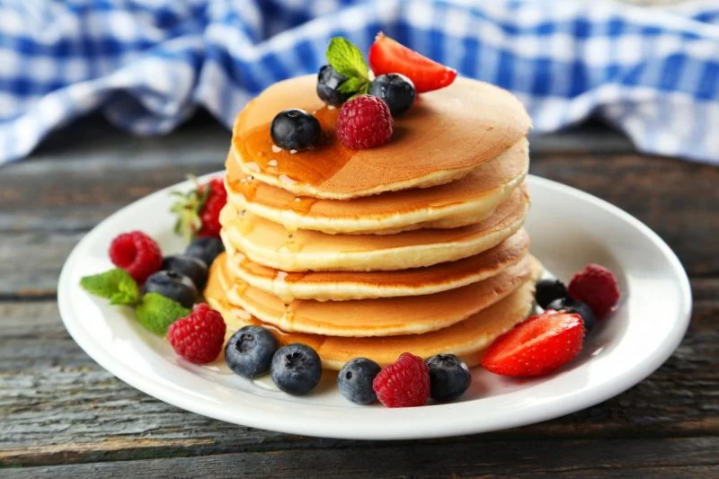
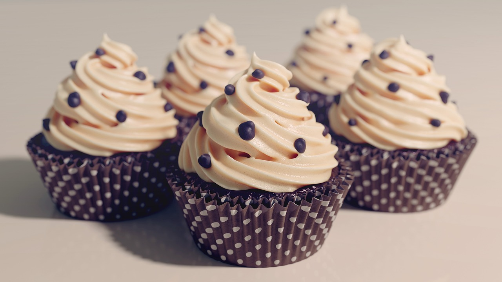
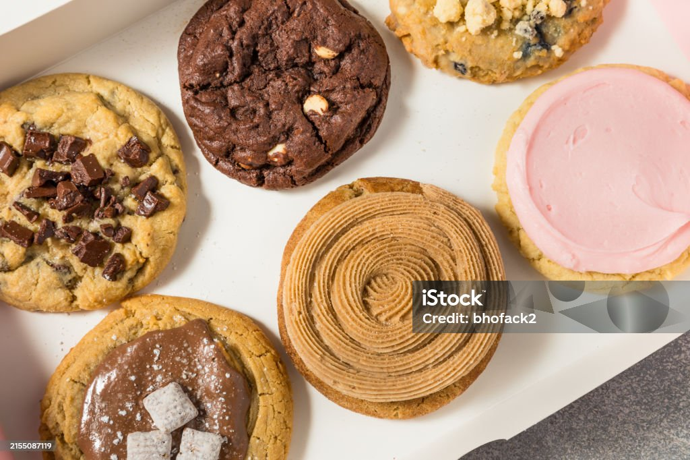
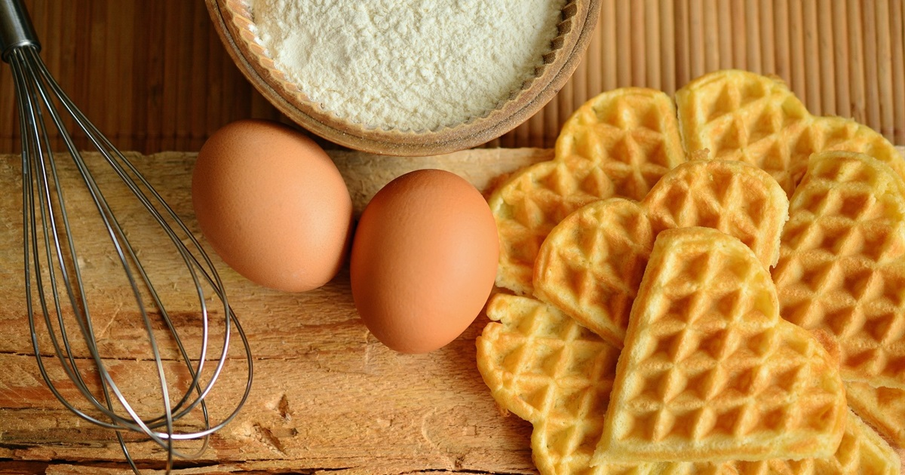
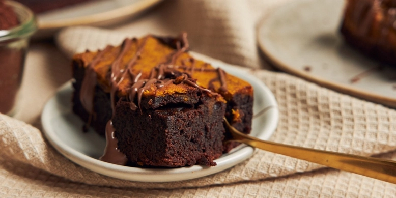
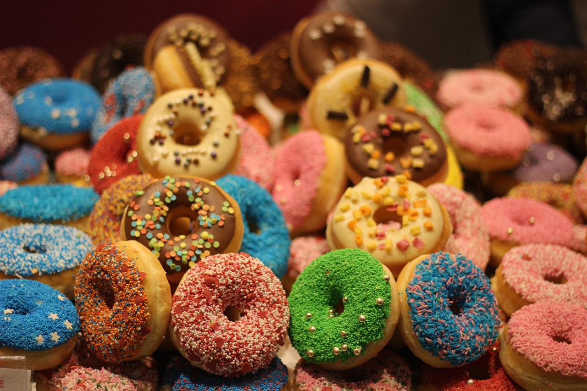
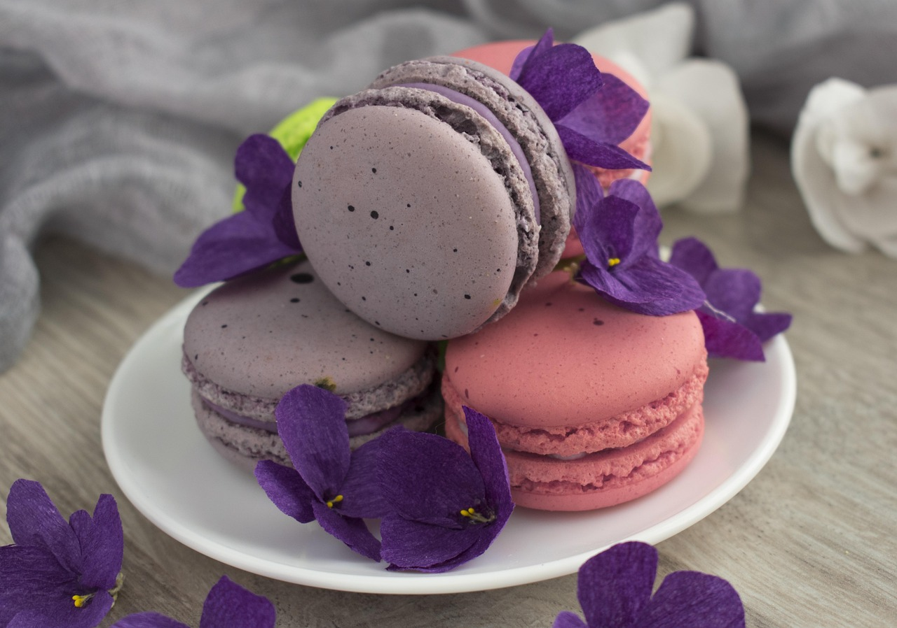

Панкейк
Спосіб приготування
- 250 мл молока
- 1 яйце
- 3 ст. ложки рослинного або 40 гр. розтопленого вершкового масла, воно повинно бути остигле або трохи тепле, але не гаряче;
- 4 ст. л. цукру;
- 1 ч. л. розпушувача;
- 1/4 ч. л. солі;
- 170 гр борошна.

Кекси
Спосіб приготування
- 2 яйця
- 1 стакан кефіру
- 1 склянка цукру
- 1/2 склянки рослинної олії
- 2 ч. ложки какао-порошку
- 2,5 склянки борошна
- 1 ч. ложка розпушувача тіста
- 1 ч. ложка соди
- сіль
- 1 ч. ложка ванільного цукру (за бажанням)

Печиво
Спосіб приготування
- Масло - 100 г
- Цукор - 100 г
- Ванільний цукор - 1 ч л
- Яйце - 1 шт
- Борошно - 150 г
- Розпушувач - 1/3 ч л
- Шоколад - 100 г

Бельгійські вафлі
Спосіб приготування
- 200 р. муки;
- 120 г вершкового масла;
- 2 яйця (можна замінити альбуміном або яєчним порошком);
- 80 г цукру;
- 10 г ванільного цукру;
- 10 г ванільного цукру;
- 1 чайна ложка розпушувача.

Брауні
Спосіб приготування
- Масло — 100 г + 1 ч.л. для соусу
- Яйця — 2 шт.
- Борошно — 70 г
- Какао-порошок — 2 ст.л
- Цукрова пудра — 100 г
- Банан — 1 шт. (для додаткової м'якості та аромату)
- Шоколад — 1 плитка
- Вершки — 50 мл (для соусу)

Пончики
Спосіб приготування
- 450 г борошна
- 1 яйце
- 3 ст. л. цукру
- 10 г ванільного цукру
- 50 г масла
- 0,5 ч. л. соди
- дрібка солі
- 250 мл кефіру
- 500 мл олії для смаження
- цукрова пудра для подачі

Макаронси
Спосіб приготування
- Цукор - 300 г
- Вода - 90 г
- Білок - 110 г
- Мигдальне борошно - 300 г
- Цукрова пудра - 300 г
- Білок - 100 г
- Барвник

Круасан
Спосіб приготування
- Борошно500 г
- Сухі дріжджі 20 г
- Сіль 10 г
- Цукор 50 г
- Яйце 1 шт
- Вершкове масло 200 г
- Молоко 125 мл
- Вода 125 мл